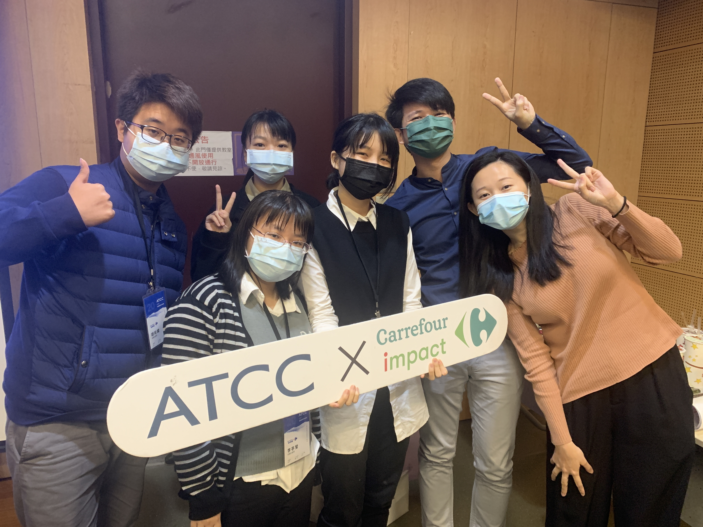

關於我
我是任潔瑜，2023將畢業於中興大學應用經濟系。
在學時有過許多與團體合作從無到有規劃落地實做的經驗，
例如商業集資、創立社團、校刊企劃等。
校外參與過專案比賽與實習，
例如永豐企業導師專案企劃、ATCC家樂福組等，
其中在蒂芙藝術公司的實習最讓我印象深刻。
我是個跨領域的挑戰者，
基於本科系將經濟學佐以應用的精神，厚實數據分析的基礎。
由於對數位產品設計的熱愛，對商業數據分析及使用者體驗設計有著極高興趣，
因此自學UI/UX的相關技能， 透過實習時期公司電商新網站建立的過程中，
參與到表現層、框架層至結構層的使用者體驗優化， 以此做為基石，
我體認到人本設計價值之重要性與浩瀚，
為此我將保持飢渴並不斷學習，秉持為使用者著想的心，
與團體齊心協力為公司設計出好的產品並賺取利益是我對自己最大的期許。

